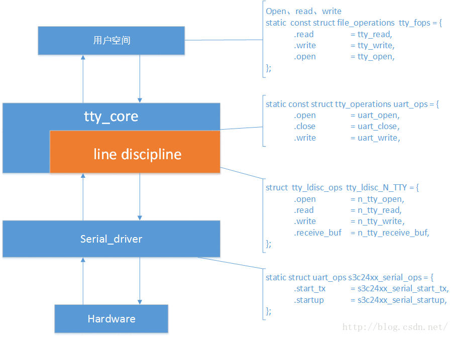

概览
pppoe总框架原理

pptp总框架原理
ppp可行性分析
本文介绍
现需要在我们自己公司的4G路由器上移植pptp功能. 4G路由器硬件为mips.本来只需把开源的pptp和pppd编译对应的mips版本即可.但是由于4G路由本身有一套ppp库代码.为了实现软件的优化和可控性,我们想把开源的pptp和我们系统已有的ppp库实现融合. 由于ppp库没有使用手册,并且想要修改pptp实现各种我们需要的定制功能,例:按需拨号,自动重连等功能.我们先需要分析ppp vpn框架原理和ppp代码实现.来完成我们的pptp项目软件设计.
难点
一 需要捋顺整个ppp相关框架也就是以上框架图,同时还要掌握框架中用到的内核关键结构体和index,应用用到的fd等.
二 需要掌握pppd的协议状态机.
tty简介
首先需熟悉tty驱动框架,然后再分析ppp是如何结合tty框架实现的.
整个 uart 框架大概的样子如上图所示，简单来分的话可以说成两层，一层是下层我们的串口驱动层，它直接与硬件相接触，我们需要填充一个 struct uart_ops 的结构体，另一层是上层 tty 层，包括 tty 核心以及线路规程，它们各自都有一个 Ops 结构，用户空通过间是 tty 注册的字符设备节点来访问，这么说来如上图所示涉及到了4个 ops 结构了，层层跳转。。

ppp内核态tty框架实现代码
ppp利用了tty中的规程层,实现了通过tty截获与发送数据.
在PPP驱动程序中,
每一tty终端设备对应于一条PPP传输通道(channel),
每一ppp网络设备对应于一个PPP接口单元(unit)
ppp内核态重要结构体
struct channel{
struct ppp /*包含struct ppp_file而ppp_file中包含index*/
struct ppp_channel/*也包含struct channel*/
} /*generic定义*/
struct ppp {
struct ppp_file file;
}/*generic定义*/
struct ppp_file {
int index;
}/*generic定义*/
struct asyncppp{
struct ppp_channel/*包含struct channel找到index*/
}/*ppp_async定义 ppp_asynctty_open中初始化*/
ppp_asynctty_open初始化了
{
struct asyncppp
struct ppp_channel
struct channel
struct ppp_file
}
/*此函数很关键,要掌握如何调用此函数,也就更熟悉pppd初始化原理了*/
/*ppp_asynctty_open初始化了以上大部分结构体*/
/*调用此ppp_asynctty_open函数的位置比较隐蔽*/
/*是在pppd通过ioctl绑定规程时内核函数tty_set_ldisc中调用了此函数*/
/*以上结构体都初始化好后,pppd就可以通过/dev/ppp绑定channel_id了*/
pppd摘要代码框架
int main(argc, argv){
/*配置参数*/
...
magic_init();
/* Initialize each protocol.*/
for (i = 0; (protp = protocols[i]) != NULL; ++i)
(*protp->init)(0);
/*创建虚拟接口*/
ppp_available();
for (i = 0; (protp = protocols[i]) != NULL; ++i)
if (protp->check_options != NULL)
(*protp->check_options)();
if (the_channel->check_options)
(*the_channel->check_options)();
/*进入状态机*/
for (;;) {
lcp_open(0); /* Start protocol */
start_link(0);
while (phase != PHASE_DEAD) {
}
lcp_close(0, "");
}
}
ppp框架中的(tty用户层)
//在tty_register_device中注册
ppp框架中的(tty核心层)
//在注册驱动层中注册的核心层
1、为线路规程和termios分配空间，并使 tty_driver 相应的成员指向它们。
2、注册字符设备，名字是 uart_driver->name 我们这里是“ttySAC”,文件操作函数集是 tty_fops。
3、将该 uart_driver->tty_drivers 添加到全局链表 tty_drivers 。
4、向 proc 文件系统添加 driver ，这个暂时不了解。
int tty_register_driver(struct tty_driver *driver)
{
tty_register_device(driver, i, NULL);
return 0;
}
ppp框架中的(tty规程层)
ppp_async.c
static struct tty_ldisc_ops ppp_ldisc = {
.owner = THIS_MODULE,
.magic = TTY_LDISC_MAGIC,
.name = "ppp",
.open = ppp_asynctty_open,
.close = ppp_asynctty_close,
.hangup = ppp_asynctty_hangup,
.read = ppp_asynctty_read,
.write = ppp_asynctty_write,
.ioctl = ppp_asynctty_ioctl,
.poll = ppp_asynctty_poll,
.receive_buf = ppp_asynctty_receive,
.write_wakeup = ppp_asynctty_wakeup,
};
static int __init
ppp_async_init(void)
{
/*注册tty规程*/
err = tty_register_ldisc(N_PPP, &ppp_ldisc);
}
/*创建channel*/
static int ppp_asynctty_open(struct tty_struct *tty)
{
}
static int ppp_asynctty_ioctl(struct tty_struct *tty, struct file *file,
unsigned int cmd, unsigned long arg)
{
switch (cmd) {
case PPPIOCGCHAN: //获取channel
case PPPIOCGUNIT: //
case TCFLSH:
case FIONREAD:
}
}
ppp框架中的(tty驱动层)
pty.c
1、根据driver支持的最大设备数，申请n个 uart_state 空间，每一个 uart_state 都有一个 uart_port 。
2、分配一个 tty_driver ，并将drv->tty_driver 指向它。
3、对 tty_driver 进行设置，其中包括默认波特率、校验方式等，还有一个重要的 Ops ，uart_ops ，它是tty核心与我们串口驱动通信的接口。
4、初始化每一个 uart_state 的 tasklet 。
5、注册 tty_driver 。
pty_init()
{
tty_set_operations(pty_driver, &pty_ops);
tty_register_driver(pty_driver);
}
ppp_register_net_channel() {
init_ppp_file(&pch->file, CHANNEL);
}
ppp_create_interface(){
init_ppp_file(&ppp->file, INTERFACE);
}
ppp只需通过pptp知道一个tty_dev就可以了
pppd配置参数
pppd相关fd
/*/dev/pty/n 1.绑定规程 2.获取chindex
connect_tty中第二创建*/
ppp_cfg[unit]->dev_fd = ppp_info->ttyfd;
/*/dev/ppp CHANNEL
pptp_setup_ppp中第三创建*/
ppp_cfg[unit]->lcp_fd = fd;
/*/dev/ppp INTERFACE
make_ppp_unit中第一创建*/
ppp_cfg[unit]->ppp_fd = ppp_info->ppp_dev_fd;
之所以列出此结构,是因为ppp启动状态机之前的所有初始化都和此配置相关.
我们初始化时可以利用此结构依次初始化.
pppd相关结构体
/*我们自己定义用于保存ppp配置*/
struct pptp_ppp_channel
{
int ppp_dev_fd;
int ifunit; /* Interface unit number */
int ioctl_fd; /*for ioctl*/
struct thread *cdma_rth;
struct thread *cdma_idle_tth;
struct thread *at_rth;
struct thread *at_tth;
struct thread *auto_down_dial;
list pkt_list;
int ttyfd;
int state;
char user[256]; /* Username for authentication */
char passwd[256]; /* Password for authentication */
struct prefix_ipv4 local_addr;
u8 distance;
u8 weight;
u8 gateway;
u8 dns;
int idle_time;
};
/*pppd状态机用到的结构体*/
struct ppp_info
{
int unit;
int dev_fd;
int lcp_fd;
int ppp_fd;
int remote_id;
char *user; /* Username for authentication */
char *passwd; /* Password for authentication */
char *ifname;
char attach_inter[16];
unsigned char distance;
unsigned char weight;
unsigned char gateway;
unsigned char dns;
unsigned char auth;
unsigned char auth_type;
unsigned char down_flag;
unsigned int unique;
unsigned int dns_value;
unsigned int wins_value;
char usergrp[MAXNAMELEN];
struct prefix_ipv4 localaddr;
unsigned int peer_address;//tunnip
int lcp_detect_interval_time;
int lcp_detect_lost_times;
struct thread * lcp_thread;
struct thread * ipcp_rthread;
void *conn;
void *priv_data;
int natid;
int mtu;
Ppp_if_type iftype;
int (*manage_auto_down) (char *ifname);
int (*ipcp_up_cb) (struct ppp_cb_info *cb_info);
int (*ipcp_down_cb) (struct ppp_cb_info *cb_info);
int (*lcp_auth) (char *name, char *group, char *password, unsigned char *challenge, int unit, int type);
int (*check_rqci)(__u32 addr);
};
pppd协议初始化原理代码
pppd对tty做规程绑定
/* The PPP discpline */
static int ppp_disc = N_PPP;
int tty_establish_ppp (int devfd)
{
/*绑定tty规程*/
if (ioctl(devfd, TIOCSETD, &ppp_disc) < 0)
ret_fd = generic_establish_ppp(devfd);
}
pppd绑定对应pty_chindex
//例
void start_link(unit)
{
/*调用connect_tty*/
devfd = the_channel->connect();
/*调用tty_establish_ppp*/
fd_ppp = the_channel->establish_ppp(devfd);
}
int connect_tty()
{
/*char ppp_devnam[MAXPATHLEN]; //name of PPP tty*//
get_pty(&pty_master, &pty_slave, ppp_devnam, uid);
return pty_slave;
}
int tty_establish_ppp (int tty_fd)
{
/*对tty做规程绑定*/
if (ioctl(devfd, TIOCSETD, &ppp_disc) < 0)
/*通过/dev/ppp设置channel*/
ret_fd = generic_establish_ppp(tty_fd);
}
int generic_establish_ppp (int devfd)
{
/*通过/dev/pty/n获取channel id*/
if (ioctl(devfd, PPPIOCGCHAN, &chindex) == -1)
/*打开"/dev/ppp"*/
fd = open("/dev/ppp", O_RDWR)
/*设置channel 到/dev/ppp*/
if (ioctl(fd, PPPIOCATTCHAN, &chindex) < 0)
}
pppd协议发送接口初始化
static int make_ppp_unit(struct cdma_ppp_channel *ppp_info)
{
ppp_dev_fd = open("/dev/ppp", O_RDWR);
x = ioctl(ppp_dev_fd, PPPIOCNEWUNIT, &req);
ppp_info->ppp_dev_fd = ppp_dev_fd;
}
int cdma_setup_ppp(struct cdma_ppp_channel *ppp_info)
{
fd = open("/dev/ppp", O_RDWR);
if (ioctl(fd, PPPIOCATTCHAN, &chindex);
if (ioctl(fd, PPPIOCCONNECT, &ppp_info->ifunit);
ppp_cfg[unit]->dev_fd = ppp_info->ttyfd;
ppp_cfg[unit]->lcp_fd = fd;
ppp_cfg[unit]->ppp_fd = ppp_info->ppp_dev_fd;
}
void output (int unit, unsigned char *p, int len)
{
int fd = ppp_cfg[unit]->lcp_fd;
if (ppp_cfg[unit]->ppp_fd >= 0 && !(proto >= 0xc000 || proto == PPP_CCPFRAG))
fd = ppp_cfg[unit]->ppp_fd;
if (write(fd, p, len) < 0)
}
pppd协议/转状态机原理
pppd状态机框图
pppd状态机启动代码
int cdma_setup_ppp(struct cdma_ppp_channel *ppp_info){
magic_init();
for (i = 0; (protp = protocols[i]) != NULL; ++i)
(*protp->init)(unit);
new_phase(unit,PHASE_ESTABLISH);
lcp_lowerup(unit);
lcp_open(unit); /* Start protocol */
ppp_cfg[unit]->lcp_thread = thread_add_read(master, pppd_read, (void *)unit, fd);
ppp_cfg[unit]->ipcp_rthread = thread_add_read(master, pppd_read, (void *)unit, ppp_info->ppp_dev_fd);
}
pppd协议发包流程
//ppp_generic.c
//ppp_xmit_process 通过虚拟网口
//ppp_channel_push 通过tty
switch (cmd) {
case PPPIOCNEWUNIT:
ppp = ppp_create_interface(net, unit, &err);
file->private_data = &ppp->file;
}
ppp_write(){
struct ppp_file *pf = file->private_data;
switch (pf->kind) {
case INTERFACE:
ppp_xmit_process(PF_TO_PPP(pf));
break;
case CHANNEL:
ppp_channel_push(PF_TO_CHANNEL(pf));
break;
}
虚拟网口发包流程
ppp_start_xmit->ppp_xmit_process->
ppp_push调用pch->chan->ops->start_xmit发送数据包。
ppp_asynctty_open中注册的ppp_async_send函数，
---规程层---
ppp_async_send经ppp_async_push函数调用
tty->driver->write把数据发送串口
---驱动层---
pty_ops
例如:tty->driver->write为pty_ops中的write
//注:其中pty-master可以理解为tty硬件层
//内核中pty.c 设置驱动层操作函数
pty_init()
{
tty_set_operations(pty_driver, &pty_ops);
}
//pppd为以上pty和disc做了绑定
//也就是驱动层到规程层关联
int tty_establish_ppp (int devfd)
{
/*绑定tty规程*/
if (ioctl(devfd, TIOCSETD, &ppp_disc) < 0)
ret_fd = generic_establish_ppp(devfd);
}
//其中channel_id为以上操作标识
ppp_channel_push(PF_TO_CHANNEL(pf))
ppp = ppp_create_interface(net, unit, &err);
if (!ppp)
break;
file->private_data = &ppp->file;
ppp_xmit_process(PF_TO_PPP(pf))
ppp = ppp_create_interface(net, unit, &err);
if (!ppp)
break;
file->private_data = &ppp->file;
ppp_设置网口ip
pptp原理与设计
值得一提的是 ppp的LCP协商Configure-Request,是在pptp中发的.
数据结构:
pptp_cfg
{
int instance_id;
int gre_fd;
int tty_fd;
int call_id;
int peer_call_id;
char username[];
char password[];
}
操作函数:
启动
1. 创建gre_fd
2. 创建tty_fd;
3. 通过pptp协商获取call_id
4. 启动gre_copy线程
5. 执行ppp协商,创建虚拟接口
关闭
1. 协商断开ppp连接, 协商断开pptp连接.
2. 关闭虚拟接口
2. gre_copy通过pptp_cfg标记退出线程并释放对应pptp_cfg
PPTP模块简易软件设计
- 改造PPTP
- 初始化PPPD相关设置
- 启动PPPD状态机
PPTP软件设计方案
多实例原理与设计
考虑多实例, 可以把每个实例运行一个线程.
多线程问题,就要考虑:
全局变量 互斥条件 执行顺序 信号 等.
pptp 本身是多进程实现多个连接,
所以想要多线程实现多个连接, 还需解决变量问题.也可以用多进程实现多实例
但是又要考虑控制进程时,需要进程间通信.多进程合并为线程和合并pppd需要考虑信号, 输入输出等问题.
pptp 完成二层点对点通道
ppp 完成三层ip通道
一. 完成pppd和pptp的整合, 使pptp可以和pppd.a编译在一起运行.
1.分析pppd原理.
包含:pppd 利用/dev/ppp0字符设备,通过内核到pptp_gre.
这需要分析内核的实现.
2.分析pptp原理.
二. 完成pptp初始化和二层点对点环境的建立.
三. 完成cli的demon融合
接口描述：
pptp_init : 1.初始化pptp默认参数 2.开启ctrl
pptp_set : 1.设置定制参数
pptp_enable : 1. Ctrl连接, Gre隧道建立, 获取call_id
2. 开启ppp任务, 开启copy功能任务
pptp_disable: 1. 关闭ppp任务, 关闭copy功能
1. Ctrl连接, Gre隧道断开任务
pppd通过字符设备/dev/ppp 和内核通信和发送协商报文
通过以上字符设备实现,发现ppp内核字符设备就一个.
如果要多个要注册多个ppp字符设备.
并且发送协商报文出口是在字符设备的私有数据段中.
pppd主要完成功能:
1.链路协商
2.创建虚拟接口
链路协商需要提供:
创建虚拟接口提供:
pppd输入: 1.pptp参数 2.pptp协商后信息
pppd输出: 1.设置虚拟接口
- 其中启动ppp任务,pptp需要传入tty_fd相关信息
pppd接口
- l2tp_setup_pppd
- establlish_session
pppd所有配置参数
typedef struct {
char *name; /* name of the option */
enum opt_type type;
void *addr;
char *description;
unsigned int flags;
void *addr2;
int upper_limit;
int lower_limit;
const char *source;
short int priority;
short int winner;
} option_t;
pppd中的ppp_main.c
中的main函数改为ppp_setup只是避免main冲突和做参考,并没有用.
真正的pppd启动函数在l2tp中模仿之前的main函数改为l2pd_pppox.c中l2tp_setup_pppd
l2tp_peer 是用来和对端通信的接口
ppp_ioctl 配置了ppp_channel *chan
ppp_write
移植
l2tp_ppp(sync_pppd) -> pptp_ppp
l2tp_pppox -> pptp_pppox
命令行原理与设计
如果需要多实例,则全局pptp配置连接 pptp守护进程.
守护进程只负责创建实例删除实例.
实现方案
第一阶段: 开源验证
实现pptp, pppd分离启动
/唯一需要修改的是pptp在pty_read地方,
发现pppd为启动则continue/
pptp 和pppd 开源独立测试
./pptp 192.168.2.12
./pppd /dev/pts/2 unit 1 user test@hfdzzp.vpdn.zj password test135
第二阶段: 简单demo
实现pptp融合我们系统中的pppd库
/实现简单的demo, 只是能ping通即可/
/在测试中发现 必须以协议的方式下发ip,
不能以以下方式设置,还不知道有何区别/
ifconfig pptp0 up
ifconfig pptp0 192.168.210.10 //此方法配置ip不可行 必须以api的方式配置
route add -net 192.168.210.0 netmask 255.255.255.0 pptp0
第三阶段: 设计方案
继续分析ppp相关代码,实现优化方案
多实例?
第四阶段: 实现代码
第五阶段: 测试功能
还未掌握内容
- unit /channel_id / struct ppp /struct ppp_file 等千丝万缕的关系.
pppd初始化流程start_link
第一步: 通过connect_tty拿到pty_client_fd
第二步: 通过tty_establish_ppp做规程绑定
callmgr_main->pptp_dispatch->pptp_handle_timer
断开后 应该退出pptp_ctrl进程 和 ppp线程
断开重连 应该再次pptp协商 和ppp协商